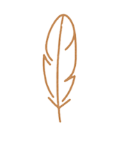

Conecte-se com a essência da natureza e redescubra seu propósito através das práticas xamânicas milenares. Um espaço de paz, cura e reconexão com sua verdadeira essência.
Inicie Sua JornadaBuscamos reconectar o ser humano com sua essência sagrada e as sabedorias ancestrais que habitam em cada um de nós. Nosso trabalho xamânico está fundamentado no respeito profundo às tradições indígenas e seus conhecimentos transmitidos por gerações.
Através de rituais, plantas sagradas e práticas meditativas, proporcionamos um caminho para que você possa despertar sua intuição natural, purificar seu campo energético e desenvolver uma conexão mais profunda com a Mãe Terra e todos os seres que nela habitam.Nossa missão é criar um espaço seguro de acolhimento espiritual, onde cada pessoa possa explorar seu universo interior e encontrar cura para as feridas da alma, permitindo que a luz da consciência floresça em plenitude.
Oferecemos diversas práticas baseadas na sabedoria ancestral para auxiliar em seu caminho de autoconhecimento e evolução espiritual
Experiências profundas de conexão espiritual guiadas pela sabedoria ancestral e intuição xamânica, respeitando os rituais tradicionais e proporcionando um ambiente seguro e acolhedor.
Saiba MaisProcesso de ativação da energia primordial através de técnicas milenares que promovem a expansão da consciência e o alinhamento dos chakras, resultando em transformação pessoal profunda.
 Saiba MaisRitual de purificação física e espiritual que representa o útero da Mãe Terra, promovendo cura, renovação e conexão profunda com os quatro elementos da natureza.
Saiba MaisConheça as experiências transformadoras de quem já percorreu este caminho sagrado conosco.
"A experiência xamânica mudou completamente minha perspectiva sobre a vida. Encontrei cura para traumas antigos e desenvolvi uma conexão profunda com minha essência. Hoje me sinto mais centrado e presente em cada momento."
— Paulo Andrade
"As cerimônias me ajudaram a reconectar com meu propósito de vida. O acolhimento e a sabedoria compartilhada pelos guias espirituais foram fundamentais para meu processo de transformação interior."
— Marina Silveira
Estamos prontos para acolher você em sua jornada espiritual. Entre em contato conosco para agendar uma consulta ou esclarecer suas dúvidas sobre nossas práticas xamânicas.